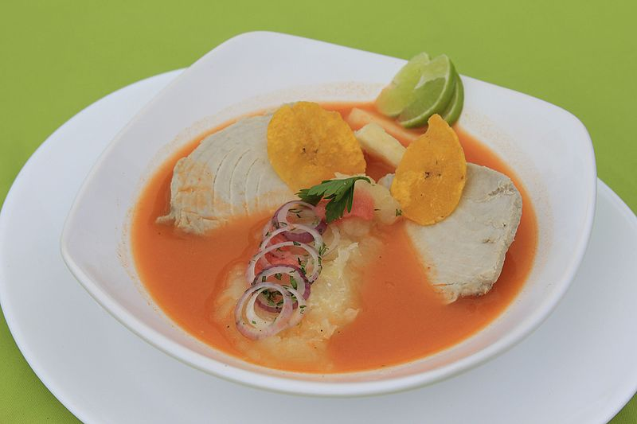

Encebollado
Ees un plato que principalmente se come cuando se está chuchaqui. Está hecho de pescado, cebolla, yuca, tomate. Se come con pan, chifle.
Bolón
Es una bola de verde revuelto con queso, chicharrón que se come en el desayuno. A veces viene con el jugo del bistéc.

Arroz con huevo
Es un plato muy popular en Ecuador porque es económico y llena. Simplemente es arroz con huevo.
Tigrillo
Se hace de la misma manera que el bolón sólo que se lo aplasta, viene acompañado con un huevo frito.